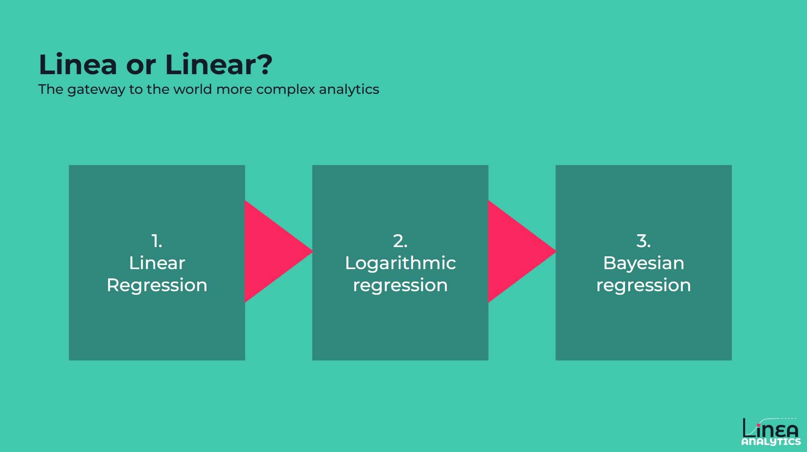

Why are we Linea Analytics and not Linear Analytics?
This is a question we get all the time, and if you landed on this page, then this will be of interest to you.
In reality, it’s two questions:
1. Why Linea not Linear?
This is quite an easy one, and the anglophones won’t like the answer. Quite simply, Linea is used in many languages, including Italian & Spanish and simply means “line”.
The word does translate similarly across languages, with the different spellings and uses of the word all being associated with our core area of measurement.
2. Why are you called Linea at all?
Two reasons:
- Many people with a scientific, mathematical or economics background all study Statistics 101 on the same subject:
Linear Regression (in English) or Regressione Lineare (in Italian)
For those eager statistics learners, Linear Regression is your gateway into the world of more complex analytics, allowing you to uncover what factors are driving your KPI.
That's exactly what we here at Linea Analytics want to deliver for our partner clients. We are your gateway into the world of measurement & uncover what’s driving growth.
- Our second consideration was for users of the product R, the statistical programming language. In line with the product name, the programming language uses a .r extension.
This means the package that allows you to run a Linear regression is entitled “Linea.r”
We may no longer often use Linear Regression approaches in our analytics, but we will continue to help you measure what's working.
Read Next
-
-
-
-